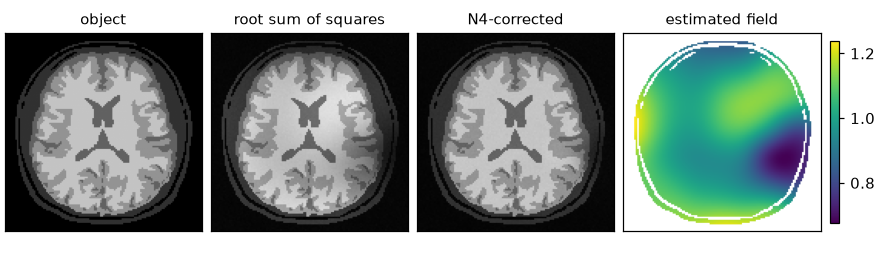
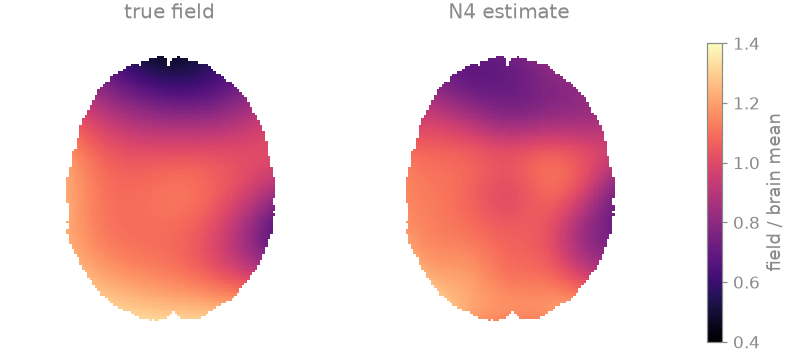
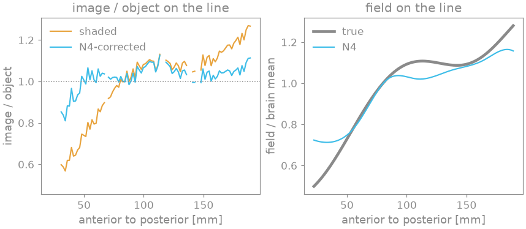
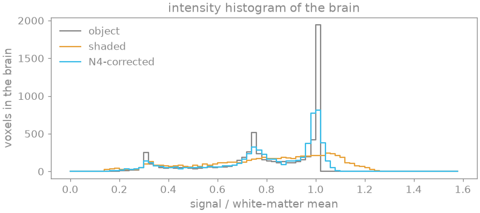
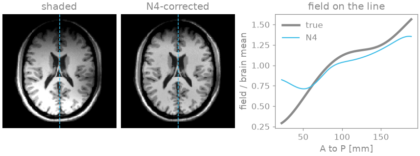

Note
Go to the end to download the full example code.
Receive bias field#
A root-sum-of-squares combination of the images of a receive array is the object weighted by the root sum of squares of the coil sensitivities. That weighting is smooth, multiplicative and largest near the elements, and it shades the image: the same tissue appears brighter near the array than far from it, which biases segmentation, intensity-based registration and any quantitative comparison across the field of view.
This example shades a T1-weighted head with a head array that has no anterior
elements, estimates the field with N4 [1] through
bartorch.tools.bias_field_correct(), and compares the corrected image and
the estimated field with the object and the true field.
Learning objectives
Relate the shading of a root-sum-of-squares image to the receive sensitivities.
Estimate and remove the bias field with N4, and assess the result by the uniformity of a tissue class and by the intensity histogram.
Choose the mask and the fitting grid of the estimate.
Recognise what N4 does not recover: the scale of the field, the steep part of a field of large range, and a smooth intensity variation that belongs to the object.
import torch
from scipy import ndimage
import bartorch
import bartorch.tools as bt
Object#
The object is an axial slice of the BrainWeb T1-weighted head [2] through the lateral ventricles, 128 x 128 over a 220 mm field of view. The BrainWeb tissue model also gives the voxels that are at least 90 % white or grey matter, over which the uniformity of each class is measured.
SIZE, FOV_MM = 128, 220.0
The shaded image#
The array is BART’s analytical eight-element head coil without its two anterior elements, as in an open-face head coil: six elements. Each coil image is the object weighted by one element’s sensitivity \(S_c\), with independent complex Gaussian noise; their root sum of squares is the object weighted by the bias field \(B = \sqrt{\sum_c |S_c|^2}\), and the noise adds a Rician floor in the background.
def shaded_image(elements):
sensitivities = bt.coils(t=bt.grid(D=(SIZE, SIZE, 1)), n=8)[elements, 0]
bias = bartorch.rss(sensitivities, axes=(0,)).abs()
sensitivities = sensitivities / bias[brain].mean()
coil_images = bt.noise(sensitivities * image, n=1e-4, s=3)
return bartorch.rss(coil_images, axes=(0,)).abs(), bias / bias[brain].mean()
shaded, bias = shaded_image([0, 1, 2, 5, 6, 7])
low, high = bias[brain].quantile(0.02), bias[brain].quantile(0.98)
print(f"bias field over the brain: {float(low):.2f} to {float(high):.2f} (2nd to 98th percentile)")
bias field over the brain: 0.56 to 1.27 (2nd to 98th percentile)
N4 correction#
N4 models the logarithm of the image as the logarithm of the object plus a smooth field, represented by cubic B-splines, and estimates the field by alternately sharpening the histogram of the log intensities and fitting the splines to what the sharpening removed, over a hierarchy of control-point grids. It uses no model of the coil, only an object whose intensities form classes.
The field is fitted on the image shrunk by shrink_factor, whose default
of 4 would leave a 32 x 32 grid of this 128 matrix; a factor of 2 keeps
64 x 64. The uniformity of a tissue class is its coefficient of variation,
the standard deviation over the mean, which the object has too through
partial volume at the class boundaries.
corrected, estimate = bt.bias_field_correct(shaded, shrink_factor=2, return_field=True)
def variation(values, region):
return float(values[region].std() / values[region].mean())
for name, values in (("object", image), ("shaded", shaded), ("N4-corrected", corrected)):
contrast = values[white].mean() / values[grey].mean()
print(
f"{name:13s} coefficient of variation: white matter {variation(values, white):.3f}, "
f"grey matter {variation(values, grey):.3f}; white/grey {float(contrast):.2f}"
)
object coefficient of variation: white matter 0.011, grey matter 0.035; white/grey 1.35
shaded coefficient of variation: white matter 0.135, grey matter 0.193; white/grey 1.38
N4-corrected coefficient of variation: white matter 0.035, grey matter 0.073; white/grey 1.35
A multiplicative field is determined up to a constant factor, which the correction leaves in the image. The estimate is therefore compared with the true field after scaling both to unit mean over the brain.
def agreement(estimate, bias):
ratio = (estimate / estimate[brain].mean() / bias)[brain]
return float(ratio.median()), float(((ratio - 1).abs() < 0.1).float().mean())
median, within = agreement(estimate, bias)
estimate = estimate / estimate[brain].mean()
print(
f"estimated / true field over the brain: median {median:.3f}, "
f"within 10 % in {100 * within:.0f} % of the voxels"
)
estimated / true field over the brain: median 0.997, within 10 % in 93 % of the voxels




The images share one window, each scaled to its white-matter mean. In the shaded image the frontal lobes are darker than the occipital lobes: along the dashed line the ratio of the shaded image to the object follows the field, and the histogram of the brain has no separate grey- and white-matter peaks. After correction the ratio stays close to one except at the frontal pole, where the estimated field does not fall as far as the true one, and the two peaks separate.
The mask and the fitting grid#
The field is fitted only over a mask, by default Otsu’s threshold of the image. The alternatives compared here are a mask of the whole head, which adds the scalp and the skull, and a brain mask, such as a skull-stripping tool provides; the BrainWeb tissue model gives it here.
head = ndimage.binary_fill_holes(shaded > 0.02 * shaded.max())
masks = {"Otsu": None, "head": torch.as_tensor(head), "brain": brain}
for name, mask in masks.items():
trial = bt.bias_field_correct(shaded, mask=mask, shrink_factor=2)
print(f"{name:5s} mask: white-matter variation {variation(trial, white):.3f}")
Otsu mask: white-matter variation 0.035
head mask: white-matter variation 0.063
brain mask: white-matter variation 0.023
N4 sharpens one histogram over the whole mask. The scalp and the skull add intensity classes of their own, and the fit over the head mask is the least uniform; the brain mask, which holds only the classes the field is judged by, is the most.
The field is fitted on the image shrunk by shrink_factor and evaluated
on the full grid. A field that is smooth on the scale of the head needs few
grid points, and the cost of each N4 iteration falls with their number,
until the shrunk image holds too few voxels of each tissue class.
for shrink in (1, 2, 4, 8):
trial = bt.bias_field_correct(shaded, shrink_factor=shrink)
print(f"shrink_factor {shrink}: white-matter variation {variation(trial, white):.3f}")
shrink_factor 1: white-matter variation 0.029
shrink_factor 2: white-matter variation 0.035
shrink_factor 4: white-matter variation 0.036
shrink_factor 8: white-matter variation 0.056
What N4 does not recover#
The estimate degrades as the range of the field grows. With the four posterior elements alone the field falls steeply towards the frontal pole, and N4 overestimates it there.
steep, steep_bias = shaded_image([0, 1, 6, 7])
steep_corrected, steep_estimate = bt.bias_field_correct(steep, shrink_factor=2, return_field=True)
low, high = steep_bias[brain].quantile(0.02), steep_bias[brain].quantile(0.98)
median, within = agreement(steep_estimate, steep_bias)
print(f"four posterior elements: field {float(low):.2f} to {float(high):.2f}")
print(
f"white-matter variation: shaded {variation(steep, white):.3f}, "
f"N4-corrected {variation(steep_corrected, white):.3f}; "
f"estimate within 10 % in {100 * within:.0f} % of the voxels"
)
four posterior elements: field 0.35 to 1.55
white-matter variation: shaded 0.262, N4-corrected 0.096; estimate within 10 % in 83 % of the voxels

The corrected frontal cortex remains darker than the occipital cortex, because the estimated field does not fall as far as the true one at the frontal pole. A residual of this kind is the reason a corrected image is still compared across regions with care.
N4 removes any smooth intensity variation, whatever its origin: a receive field, a transmit field in a gradient-echo image, or a genuine slow change of the tissue signal. In a SENSE reconstruction the sensitivities are normalized to unit root sum of squares, which removes the receive shading within the reconstruction; N4 serves images for which the sensitivities are not available, such as a root-sum-of-squares combination, and the transmit field, which no receive calibration measures.
References#
Total running time of the script: (0 minutes 4.635 seconds)